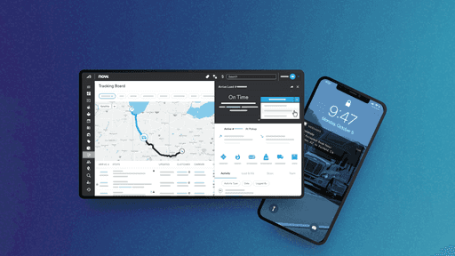
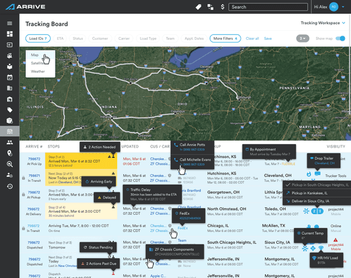
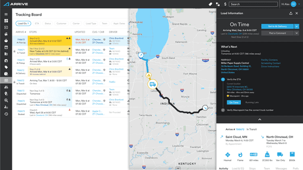
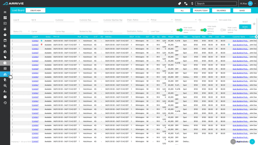
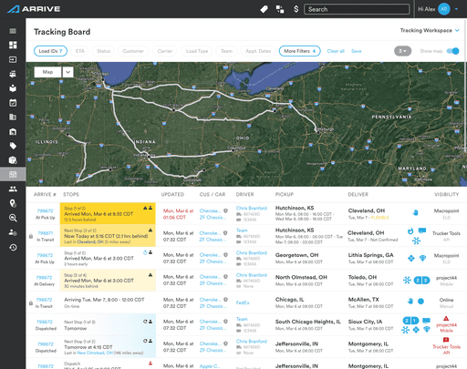
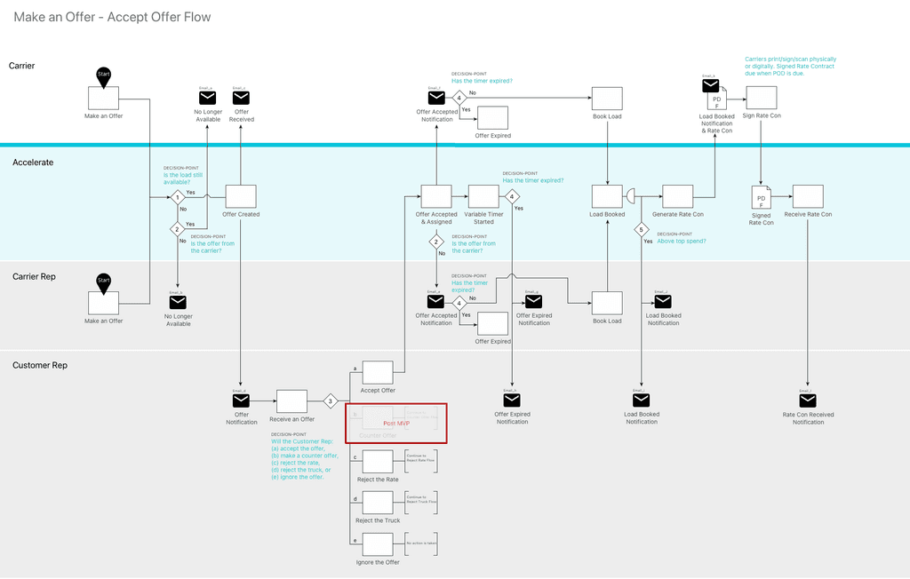
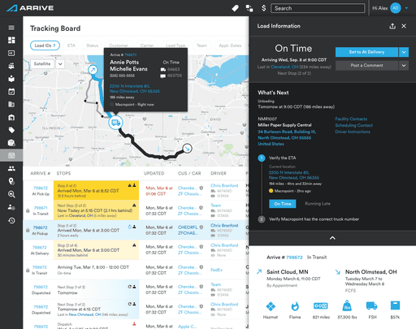
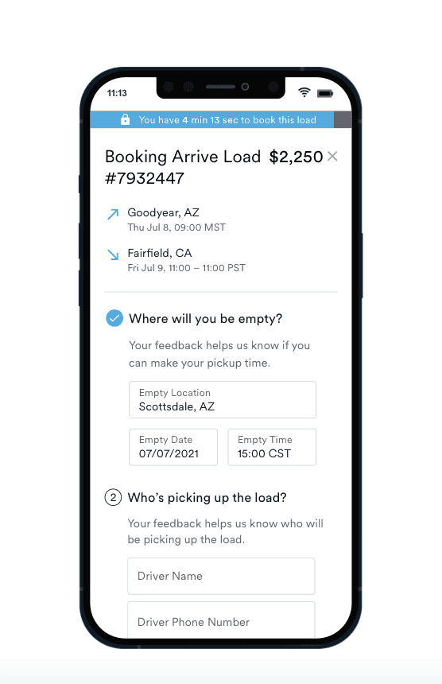

Arrive Logistics
Arrive’s load board was Excel with a login. Carriers hunted for shipping details while a customer was on the line. I shadowed them, tested on their desks, and designed for desktop — that’s where the work happens.

Arrive’s load board was Excel with a login. Carriers hunted for shipping details while a customer was on the line. I shadowed them, tested on their desks, and designed for desktop — that’s where the work happens.

I started with interviews and dozens of wires. A carrier’s day touches more systems than you’d think, and they’re switching context the whole time.
The useful part was sitting next to them on live calls. They’d say a feature mattered and then never touch it — they’d use a workaround instead. That became the design brief.
It’s a desktop job, so I skipped mobile-first. Each version went back to carriers at their desks the same week. We threw away a few complete layouts.
I stopped treating it like a grid of cells. The fields they actually used on calls sat up top. Everything else was still there, just quieter.
Related fields lived together so they weren’t hopping tabs for one decision. Contrast, spacing, and type made zones — not more grid lines.
They could find a load faster, especially when the board was slammed. Less time fighting the tool, more time on the call.






